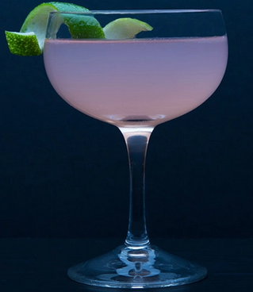

<!-- A grey horizontal navbar that becomes vertical on small screens -->
<body>
  <header>
    <nav class="navbar navbar-expand-md navbar-dark fixed-top">
      <div class="container">
        <span class="rotate">
          <a [routerLink]="['/coctails']" class="navbar-brand">
            
            <span class="display-5">
              Coctail Palace
            </span>
          </a>
        </span>
        <button class="navbar-toggler" type="button" data-toggle="collapse" data-target="#navbarCollapse"
          aria-controls="navbarCollapse" aria-expanded="false" aria-label="Toggle navigation">
          <span class="navbar-toggler-icon"></span>
        </button>

        <div class="collapse navbar-collapse nav-item" id="navbarCollapse">
          <ul class="navbar-nav mr-auto">
            <li class="nav-item active">
              <a class="nav-link" href="index.html">Home </a>
            </li>
            <li class="nav-item dropdown">
              <a class="nav-link dropdown-toggle" href="#" id="navbarDropdown" role="button" data-toggle="dropdown"
                aria-haspopup="true" aria-expanded="false" [routerLink]="['/custom-drink']">Create Cocktail
              </a>
            </li>
            <li class="nav-item">
              <a class="nav-link" [routerLink]="['/display-local']"> Local Favourites</a>
            </li>
          </ul>
        </div>
      </div>
    </nav>
  </header>

  <main role="main">
    <router-outlet></router-outlet>
  </main>
<body>